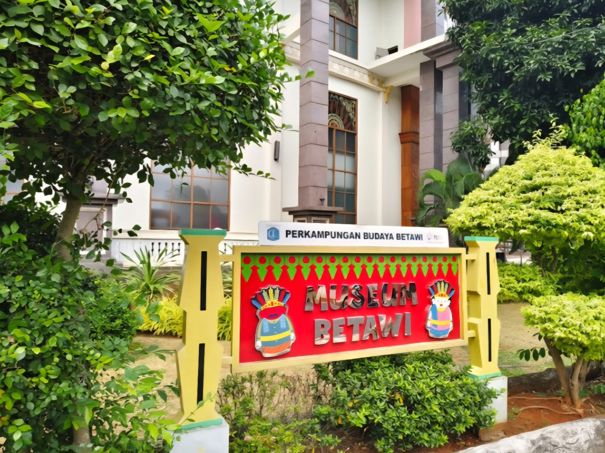
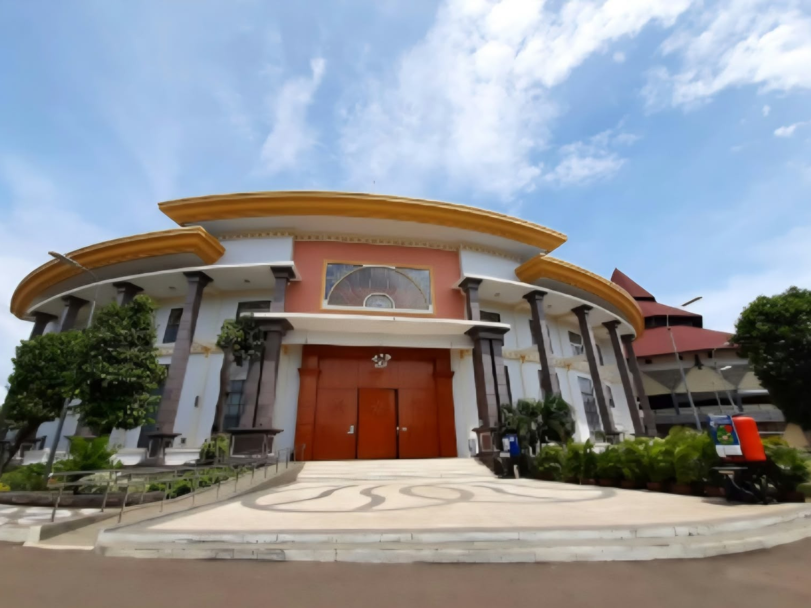
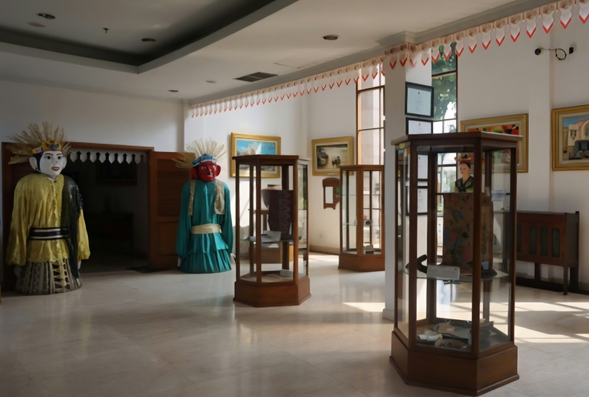
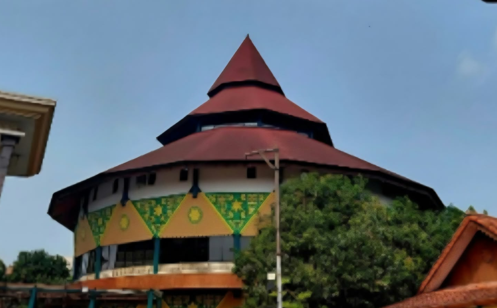
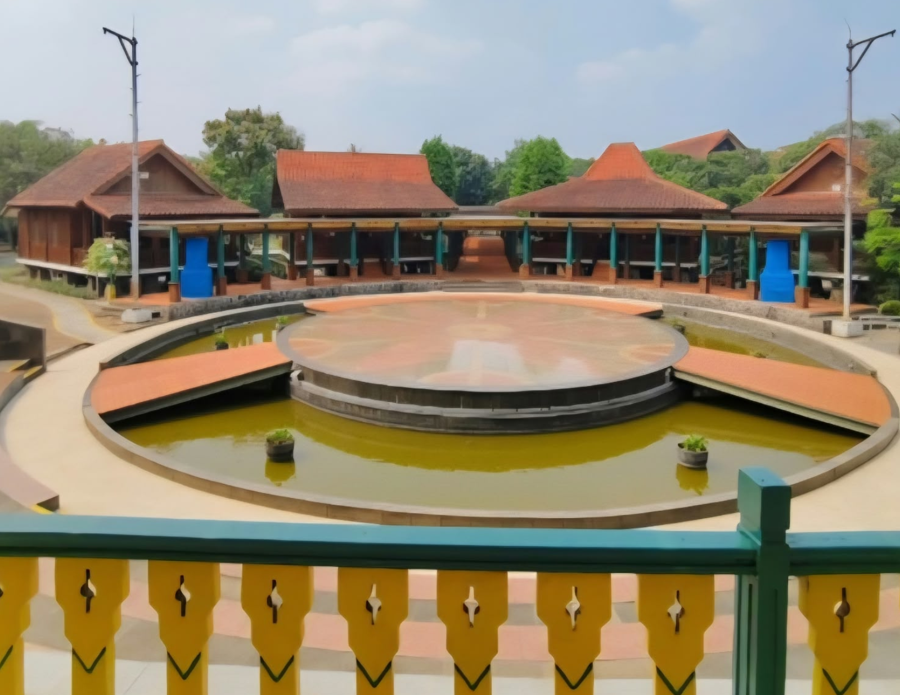

Museum Betawi atau Museum Betawi Setu Babakan merupakan museum khusus yang terletak di Jalan M Kahfi II, Srengseng Sawah, Jagakarsa, Jakarta Selatan. Museum ini berada di kawasan Perkampungan Budaya Betawi Setu Babakan, yaitu kawasan yang menjadi tempat pelestarian berbagai adat dan tradisi masyarakat Betawi. Museum Betawi dibuat untuk menampilkan berbagai koleksi yang berhubungan dengan kehidupan dan kebudayaan masyarakat Betawi. Dengan adanya museum ini, kebudayaan Betawi dapat dikenalkan kepada masyarakat melalui berbagai benda dan koleksi yang dipamerkan.
Pembangunan Museum Betawi berlangsung dari tahun 2012 sampai 2015. Pada awalnya, bangunan tersebut bukan digunakan sebagai museum, melainkan sebagai unit pengelola kawasan Perkampungan Budaya Betawi. Museum Betawi kemudian resmi dibuka pada 30 Juli 2017. Museum ini mulai dibuka untuk kunjungan umum pada pelaksanaan Lebaran Betawi ke-11 yang dihadiri oleh Joko Widodo.

Pada saat pertama kali dibuka, Museum Betawi hanya mempunyai satu ruangan untuk memamerkan koleksi. Koleksi yang ditampilkan pada saat itu merupakan koleksi pinjaman dari beberapa museum, seperti Museum Fatahillah, Gedung Mohammad Hoesni Thamrin, Museum Tekstil, Museum Wayang, dan Museum Bahari. Pada 11 Januari 2022, Museum Betawi juga telah terdaftar secara resmi dan masuk dalam data Direktorat Pelindungan Kebudayaan, Kementerian Pendidikan, Kebudayaan, Riset dan Teknologi.
Museum Betawi memiliki bangunan tiga lantai yang berada di kawasan dengan luas sekitar 3,2 hektare. Setiap lantai memiliki koleksi dan galeri yang berbeda. Koleksi yang ditampilkan menggambarkan berbagai bagian dari kehidupan masyarakat Betawi, mulai dari rumah, pakaian, makanan, pernikahan, peralatan rumah tangga, sampai kesenian.
Pada lantai pertama terdapat dua galeri, yaitu Galeri 8 Ikon Budaya Betawi dan Galeri Pengantin Betawi. Galeri 8 Ikon Budaya Betawi menampilkan beberapa hal yang menjadi ciri khas kebudayaan Betawi. Salah satunya adalah rumah kebaya yang merupakan rumah adat Betawi. Rumah kebaya tersebut memiliki ornamen gigi balang. Selain itu, terdapat kembang kelapa yang biasa digunakan sebagai hiasan pada ondel-ondel dan pakaian pengantin Betawi.
Di lantai pertama juga terdapat berbagai pakaian khas Betawi. Koleksinya antara lain baju Abang dan None, kebaya, serta baju sadariah. Batik Betawi juga menjadi salah satu bagian dari koleksi budaya yang ditampilkan. Pakaian sadariah biasanya dikenakan oleh laki-laki dan dapat digunakan bersama peci serta kain cukin. Galeri Pengantin Betawi juga berada di lantai pertama. Pengunjung dapat melihat pakaian pengantin, hantaran, peralatan musik, dan roti buaya. Selain pakaian, makanan dan minuman khas Betawi juga menjadi bagian dari ikon budaya yang ditampilkan, yaitu kerak telor dan bir pletok.
Lantai kedua merupakan Galeri Rumah Orang Betawi. Galeri ini berisi berbagai perabot dan peralatan yang berkaitan dengan kehidupan rumah tangga masyarakat Betawi pada masa lalu.. Beberapa benda yang ditampilkan adalah kukusan, alu, pane atau bakul nasi kayu, meja kanjengan, dan sepeda ontel.

Sementara itu, lantai ketiga merupakan Galeri Komedi Betawi. Galeri ini menampilkan berbagai alat musik khas Betawi. Selain alat musik, terdapat pula potret para seniman Betawi. Beberapa tokoh yang ditampilkan adalah Benyamin Sueb dan Mpok Nori. Koleksi di galeri ini berkaitan dengan kesenian dan hiburan yang menjadi bagian dari kebudayaan masyarakat Betawi.
Museum Betawi termasuk museum khusus karena memiliki fokus utama pada kebudayaan masyarakat Betawi. Museum ini dikelola oleh Unit Pengelola Kawasan Perkampungan Budaya Betawi dan berada di bawah pengawasan Pemerintah Provinsi DKI Jakarta melalui Dinas Kebudayaan. Museum ini juga telah memiliki Nomor Pendaftaran Nasional Museum (NPNM) 31.74.K.03.0285 dalam Pendaftaran Museum Indonesia.

Museum Betawi memiliki manfaat dalam bidang pendidikan dan pelestarian budaya. Berbagai koleksi yang terdapat di dalamnya dapat membantu pengunjung untuk mengenal kebudayaan masyarakat Betawi secara lebih dekat. Pengunjung dapat mengetahui berbagai hal, seperti rumah adat, pakaian, makanan, perlengkapan pernikahan, peralatan rumah tangga, alat musik, dan tokoh-tokoh kesenian Betawi.

Museum ini juga menjadi salah satu tempat untuk menjaga agar kebudayaan Betawi tetap dikenal oleh masyarakat terutama bagi generasi muda . Hal tersebut penting karena kebudayaan daerah merupakan bagian dari warisan budaya yang perlu dilestarikan.
Selain sebagai tempat penyimpanan dan pameran koleksi, Museum Betawi juga memiliki peran sebagai tempat edukasi dan wisata budaya. Melalui museum, pengunjung tidak hanya melihat benda-benda yang berkaitan dengan budaya Betawi, tetapi juga dapat memahami kehidupan dan tradisi masyarakat Betawi.